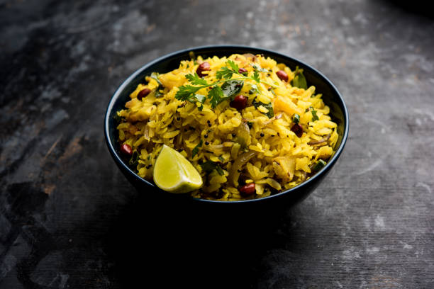

POHA RECIPE
Poha is an easy, delicious and healthy breakfast recipe, popular in Maharashtra, India. Made with onions, potatoes and seasoning like chillies, lemon and curry leaves make up a tasty and easy meal of Poha, especially when you don't feel like cooking.
| Ingredients |
| Quantity |
Ingredient |
Instruction |
| 1 cup |
Poha/Chivda |
Pressed Rice |
| 1 tbsp |
Oil, Mustard Seeds, Lemon Juice |
|
| 1 tbsp |
Green Chillies, Coriander Leaves |
Chopped |
| 2 tbsp |
Salt |
|
| 1/8 tbsp |
Asafoetida |
|
| 1/2 cup |
onions |
Finely Chopped |
| 8-10 |
Curry Leaves |
|
|
INSTRUCTIONS
- Put poha in a colander and wash, not letting it soak too long in the water. Leave in the colander to drain out completely.
- Heat the oil and add the asafoetida, mustard seeds, curry leaves and onions along with whole red chillies.
- When onions are light brown, add potatoes, and turn around till they look a bit glossy.
- Add the turmeric and sauté over low heat till the potatoes are cooked through.
- Increase the heat, add salt and poha and mix well. Saute till mixed and heated through.
- Shut off the heat, and mix in the green chillies, lemon juice and half of the coriander.
- Transfer on to a serving dish, garnish with the rest of the coriander and lemon wedges and serve.